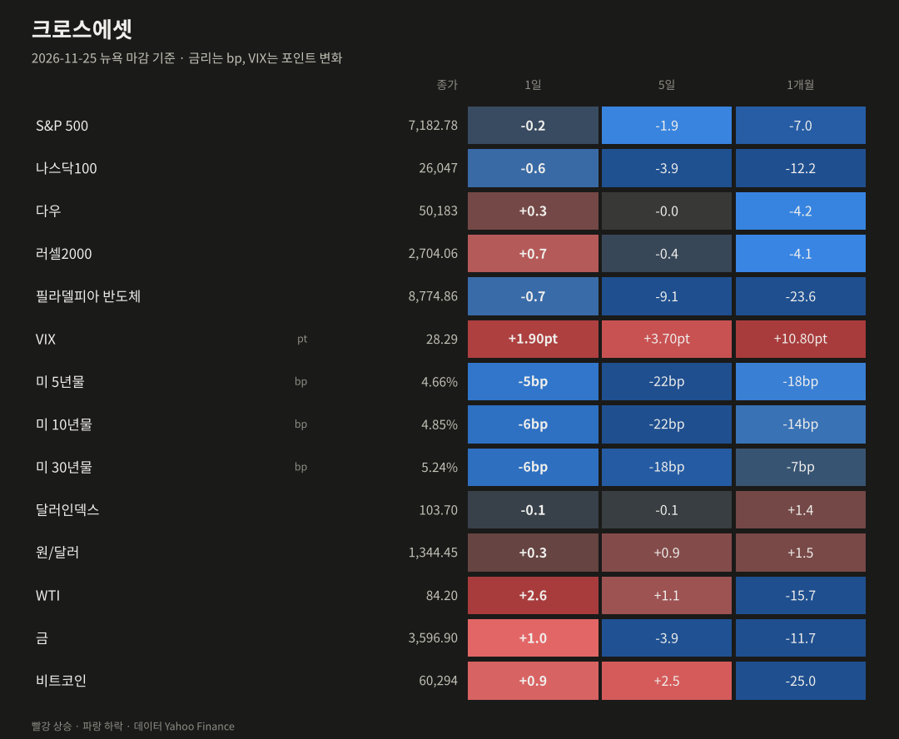
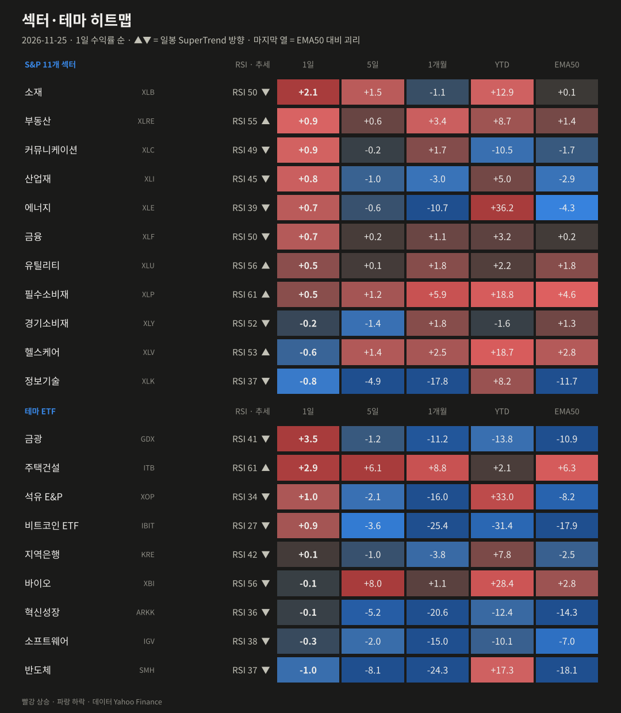
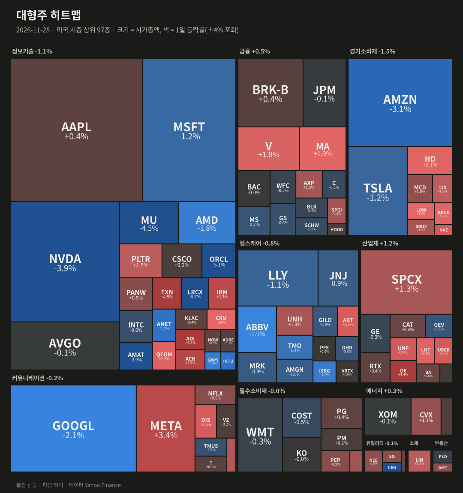
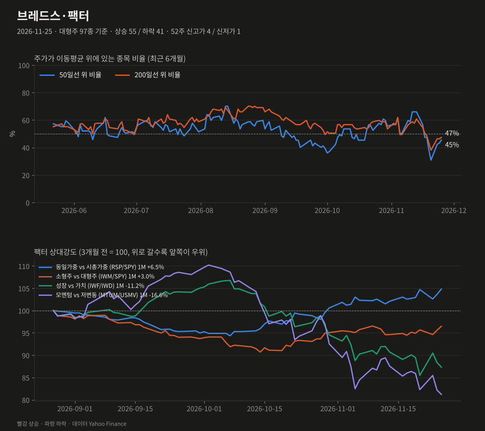
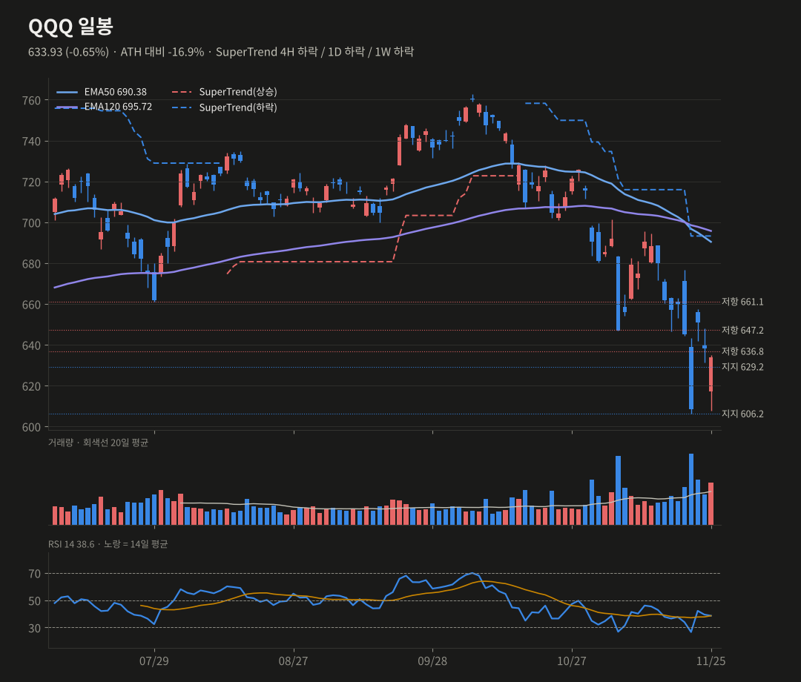
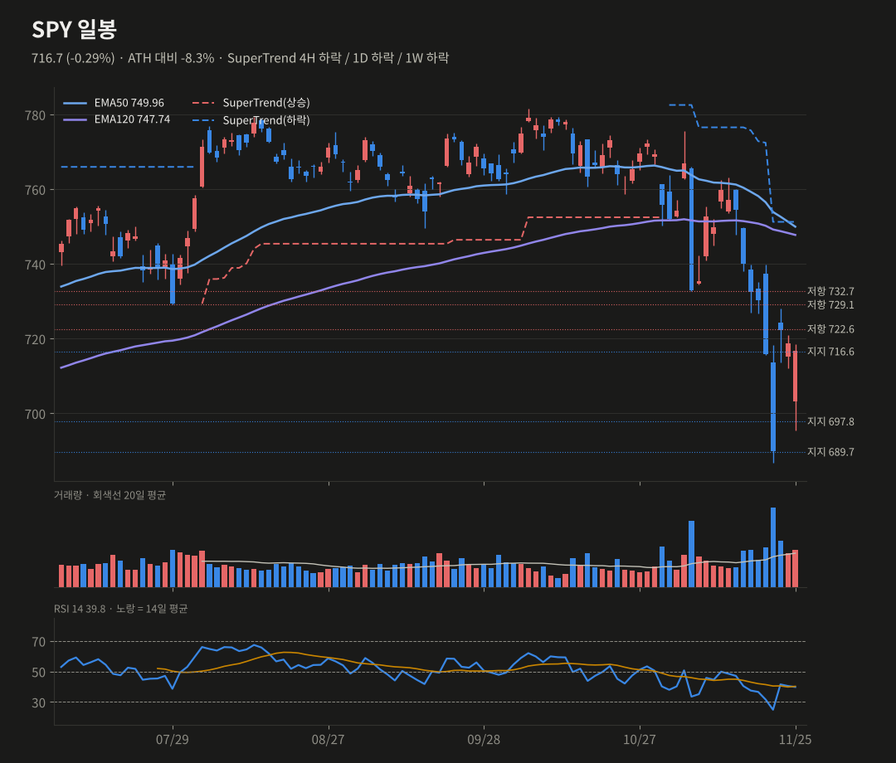
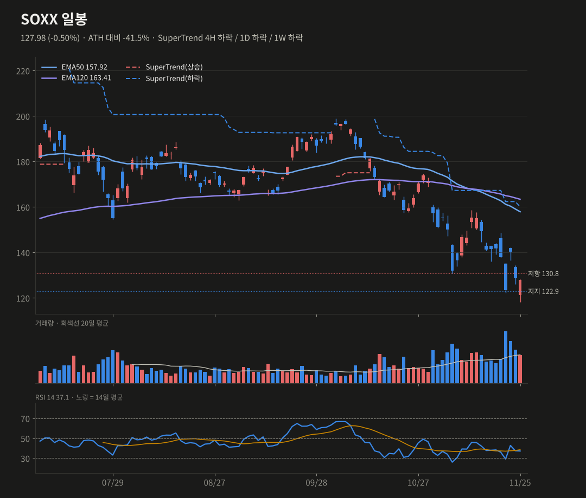
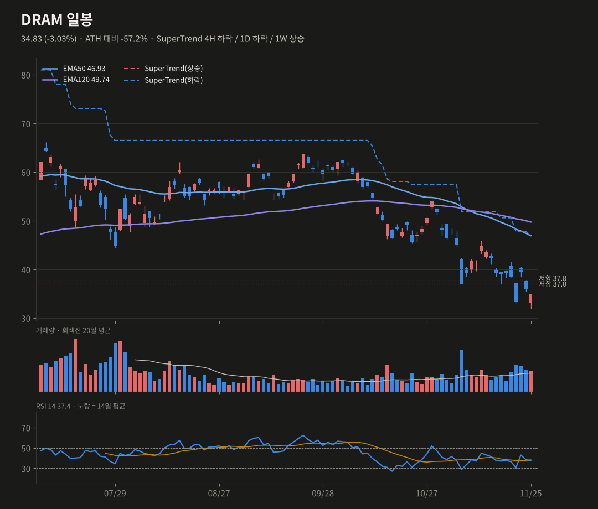

미증시 마감 브리핑
11/25(수) 뉴욕 마감 기준 · 생성 2026-11-26 06:30 KST
장중 −4.7%까지 밀린 나스닥100이 11/20 저점을 지키고 −0.6%로 마감했어요.
S&P 5007,182.78-0.25%
나스닥10026,047-0.64%
다우50,183+0.33%
러셀20002,704.06+0.71%
반도체(SOX)8,774.86-0.65%
VIX28.29+1.90pt
미 10년물4.85%-5.60bp
원/달러1,344.45+0.26%
요약
- 근원 PCE 3.3%·GDP 4.3%·관세 제안에 나스닥100이 장중 −4.7%였어요.
- 11/20 저점을 지키자 저가 매수로 −0.6%까지 회복, 다우는 +0.3%예요.
- QQQ·SPY·SOXX 단기 확률 +5%p, DRAM은 4H 데드크로스로 유지했어요.
- 목요일 휴장·금요일 조기 폐장, 12월 인상 확률은 약 98%예요.
종합 판단
물가(근원 PCE 3.3%)·성장(GDP 4.3%)·관세가 한꺼번에 겹친 장 초반 매도에 나스닥100이 고점 대비 −20% 문턱까지 밀렸지만, 11/20 저점을 지키자 저가 매수가 들어와 대부분 되돌렸어요. QQQ·SPY는 저점을 높였고 SPY 4H MACD가 골든크로스를 내 단기 확률을 5%p씩 올렸어요. 반도체는 장중 새 저점을 만든 뒤 되올라 아직 바닥 확인 전이에요. 금요일은 조기 폐장이라 거래가 얇으니, 11/20 저점(QQQ 606.2, SPY 686.8)을 지키는지가 다음 주까지 이어질 기준이에요.
물가(근원 PCE 3.3%)·성장(GDP 4.3%)·관세가 한꺼번에 겹친 장 초반 매도에 나스닥100이 고점 대비 −20% 문턱까지 밀렸지만, 11/20 저점을 지키자 저가 매수가 들어와 대부분 되돌렸어요. QQQ·SPY는 저점을 높였고 SPY 4H MACD가 골든크로스를 내 단기 확률을 5%p씩 올렸어요. 반도체는 장중 새 저점을 만든 뒤 되올라 아직 바닥 확인 전이에요. 금요일은 조기 폐장이라 거래가 얇으니, 11/20 저점(QQQ 606.2, SPY 686.8)을 지키는지가 다음 주까지 이어질 기준이에요.
무엇이 시장을 움직였나
- 장중 급락 뒤 반등: 나스닥100이 장 초반 −4.7%(24,970.7)로 고점 대비 −20% 문턱까지 밀렸다가 −0.6%로 마감했어요. 11/20 저점(24,910.5)을 깨지 않자 저가 매수가 들어왔고, 다우는 장중 −1,100포인트에서 +0.3%로 돌아섰어요(Bloomingbit·Reuters).
- 물가·성장 동반 상승: 10월 PCE 3.8%(전월 3.6%), 근원 3.3%(예상 3.2%)로 2023년 이후 최고였고, 3분기 GDP는 4.3%로 속보치(3.4%)보다 크게 올랐어요. 12월 25bp 인상 확률은 약 98%예요(Yahoo Finance).
- 관세: 미국이 '구조적 과잉 생산'을 이유로 중국·EU 등 14개국에 최대 20% 추가 관세를 제안했어요. 기존 관세에 더해져 일부 품목은 40%를 넘을 수 있고, 시행은 내년 1월 이후로 보여요(Yahoo Finance·Reuters).
- AI·반도체: 엔비디아는 장중 −9.1%에서 −3.9%로, 마이크론은 −13.0%에서 −4.5%로 줄였지만 램리서치 −5.7%, 오라클 −5.1%로 약세가 이어졌어요. 전날 급락한 ADI +6.4%, TI +4.5%는 되올랐어요.
- 금리·순환매: 10년물이 4.85%(−5.6bp)로 내려 주택건설 +2.9%, 금광 +3.5%, 소재 +2.1%(섹터 1위)가 강했어요. HP는 예상을 넘은 실적과 2027회계연도 전망에 +11.5%예요(Motley Fool). WTI +2.6%(84.2달러), VIX는 28.3(+1.9pt)이에요.
장 마감 후·시간외
- QQQ 633.3(−0.1%), SPY 716.8(0.0%), SOXX 127.8(−0.1%), DRAM 34.9(+0.1%), 엔비디아 149.4(+0.1%)로 시간외는 잠잠해요(마감 33분 기준).

| 자산 | 종가 | 1일 | 5일 | 1개월 |
|---|---|---|---|---|
| S&P 500 | 7182.78 | -0.25% | -1.92% | -6.99% |
| 나스닥100 | 26046.9 | -0.64% | -3.94% | -12.16% |
| 다우 | 50182.95 | +0.33% | -0.03% | -4.19% |
| 러셀2000 | 2704.06 | +0.71% | -0.38% | -4.07% |
| 필라델피아 반도체 | 8774.86 | -0.65% | -9.10% | -23.58% |
| VIX | 28.29 | +1.90pt | +3.70pt | +10.80pt |
| 미 5년물 | 4.66 | -5.2bp | -22.4bp | -18.0bp |
| 미 10년물 | 4.848 | -5.6bp | -21.8bp | -14.5bp |
| 미 30년물 | 5.235 | -5.7bp | -17.7bp | -7.0bp |
| 달러인덱스 | 103.7 | -0.11% | -0.15% | +1.35% |
| 원/달러 | 1344.45 | +0.26% | +0.86% | +1.49% |
| WTI | 84.2 | +2.62% | +1.13% | -15.72% |
| 금 | 3596.9 | +0.98% | -3.88% | -11.72% |
| 비트코인 | 60294.24 | +0.91% | +2.54% | -25.01% |

| 섹터·테마 | 1일 | 5일 | 1개월 | YTD | RSI | 일봉 추세 |
|---|---|---|---|---|---|---|
| 금광 GDX | +3.53% | -1.24% | -11.18% | -13.8% | 41 | 하락 |
| 주택건설 ITB | +2.91% | +6.13% | +8.84% | +2.1% | 61 | 상승 |
| 소재 XLB | +2.07% | +1.49% | -1.10% | +12.9% | 50 | 하락 |
| 석유 E&P XOP | +1.00% | -2.12% | -16.04% | +33.0% | 34 | 하락 |
| 부동산 XLRE | +0.92% | +0.55% | +3.35% | +8.7% | 55 | 상승 |
| 비트코인 ETF IBIT | +0.92% | -3.65% | -25.45% | -31.4% | 27 | 하락 |
| 커뮤니케이션 XLC | +0.89% | -0.19% | +1.74% | -10.5% | 49 | 하락 |
| 산업재 XLI | +0.83% | -1.04% | -2.96% | +5.0% | 45 | 하락 |
| 에너지 XLE | +0.74% | -0.64% | -10.72% | +36.2% | 39 | 하락 |
| 금융 XLF | +0.71% | +0.16% | +1.13% | +3.2% | 50 | 하락 |
| 유틸리티 XLU | +0.48% | +0.14% | +1.77% | +2.2% | 56 | 상승 |
| 필수소비재 XLP | +0.46% | +1.23% | +5.91% | +18.8% | 61 | 상승 |
| 지역은행 KRE | +0.10% | -0.98% | -3.79% | +7.8% | 42 | 하락 |
| 바이오 XBI | -0.14% | +7.97% | +1.14% | +28.4% | 56 | 하락 |
| 혁신성장 ARKK | -0.15% | -5.21% | -20.55% | -12.4% | 36 | 하락 |
| 경기소비재 XLY | -0.20% | -1.43% | +1.77% | -1.6% | 52 | 하락 |
| 소프트웨어 IGV | -0.35% | -1.98% | -14.99% | -10.1% | 38 | 하락 |
| 헬스케어 XLV | -0.56% | +1.39% | +2.51% | +18.7% | 53 | 상승 |
| 정보기술 XLK | -0.83% | -4.90% | -17.78% | +8.2% | 37 | 하락 |
| 반도체 SMH | -1.01% | -8.07% | -24.29% | +17.3% | 37 | 하락 |

| 상승 상위 | 1일 | 거래량(20일 대비) | 하락 상위 | 1일 | 거래량 |
|---|---|---|---|---|---|
| ADI | +6.44% | x1.43 | LRCX | -5.68% | x1.45 |
| TXN | +4.55% | x1.09 | ORCL | -5.13% | x0.87 |
| DE | +4.44% | x1.79 | MU | -4.53% | x1.45 |
| ACN | +3.52% | x0.81 | NVDA | -3.91% | x1.06 |
| META | +3.40% | x0.96 | CEG | -3.90% | x1.12 |
| IBM | +3.33% | x1.23 | AMAT | -3.89% | x1.27 |

대형주 97종: 상승 55 / 하락 41 · 50일선 위 45.4% (전일 43.3%, 5일 전 47.4%) · 200일선 위 47.4% · 52주 신고가 4 / 신저가 1
오른 종목 55, 내린 종목 41이에요. 동일가중(RSP +0.83%)이 시총가중(SPY −0.29%)을 1.1%p 앞서 이틀째 동일가중이 강했고, 러셀2000도 +0.7%였어요. SMA50 위 비율은 45.4%(전일 43.3%)로 사흘째 올랐어요.
| 팩터 스프레드 | 1일 | 5일 | 1개월 |
|---|---|---|---|
| 동일가중 vs 시총가중 (RSP/SPY) | +1.12% | +2.03% | +6.51% |
| 소형주 vs 대형주 (IWM/SPY) | +0.94% | +1.41% | +3.05% |
| 성장 vs 가치 (IWF/IWD) | -1.14% | -3.07% | -11.18% |
| 모멘텀 vs 저변동 (MTUM/USMV) | -1.14% | -5.93% | -16.64% |
기술적 분석 · 확률
TradingView 설정과 맞춘 지표(EMA50·EMA120, SuperTrend ATR20×4, RSI14, MACD 12/26/9). 확률은 차트 기반 추정치예요.
QQQ 633.93 -0.65%
SuperTrend 4H 하락 / 1D 하락 / 1W 하락 · RSI 38.58
단기 반등 55% (+5) · 스윙 상승 30%
장중 607.8(−4.8%)까지 밀려 11/20 저점(606.2)을 시험한 뒤 633.9(−0.65%)로 마감해 하루 범위의 96% 위치에서 끝났어요. 저점을 높인 반등이고 4H·일봉 MACD 히스토그램도 개선 중(4H −0.68→−0.38, 일봉 −2.81→−2.50)이라 단기 5%p 올렸어요. 다만 636.8 아래 마감이라 다음 거래일 확인이 필요해요.
상방 636.8 회복 → 647.2, 661.1
하방 629.2 이탈 → 606.2(11/20 저점), 583.3
SuperTrend 4H 하락 / 1D 하락 / 1W 하락 · RSI 38.58
단기 반등 55% (+5) · 스윙 상승 30%
장중 607.8(−4.8%)까지 밀려 11/20 저점(606.2)을 시험한 뒤 633.9(−0.65%)로 마감해 하루 범위의 96% 위치에서 끝났어요. 저점을 높인 반등이고 4H·일봉 MACD 히스토그램도 개선 중(4H −0.68→−0.38, 일봉 −2.81→−2.50)이라 단기 5%p 올렸어요. 다만 636.8 아래 마감이라 다음 거래일 확인이 필요해요.
상방 636.8 회복 → 647.2, 661.1
하방 629.2 이탈 → 606.2(11/20 저점), 583.3
SPY 716.7 -0.29%
SuperTrend 4H 하락 / 1D 하락 / 1W 하락 · RSI 39.83
단기 반등 60% (+5) · 스윙 상승 30%
장중 695.5(−3.2%)에서 716.7(−0.29%)로 회복해 716.6 지지 위에서 마감했어요. 11/20 저점(686.8)보다 높은 저점이고, 4H MACD가 골든크로스(히스토그램 −0.24→+0.15)를 냈어요. 단기 5%p 올렸고, 주봉 EMA50(722.7)은 사흘째 못 넘어 스윙은 그대로예요.
상방 722.7 회복(주봉 EMA50) → 729.1, 734.2(4H SuperTrend)
하방 716.6 이탈 → 697.8, 686.8(11/20 저점)
SuperTrend 4H 하락 / 1D 하락 / 1W 하락 · RSI 39.83
단기 반등 60% (+5) · 스윙 상승 30%
장중 695.5(−3.2%)에서 716.7(−0.29%)로 회복해 716.6 지지 위에서 마감했어요. 11/20 저점(686.8)보다 높은 저점이고, 4H MACD가 골든크로스(히스토그램 −0.24→+0.15)를 냈어요. 단기 5%p 올렸고, 주봉 EMA50(722.7)은 사흘째 못 넘어 스윙은 그대로예요.
상방 722.7 회복(주봉 EMA50) → 729.1, 734.2(4H SuperTrend)
하방 716.6 이탈 → 697.8, 686.8(11/20 저점)
SOXX 127.98 -0.50%
SuperTrend 4H 하락 / 1D 하락 / 1W 하락 · RSI 37.15
단기 반등 45% (+5) · 스윙 상승 25%
장중 118.2(−8.1%)로 11/20 저점(122.2)과 주봉 EMA120(120.3)을 잠깐 깼다가 128.0(−0.5%)으로 마감했어요. 하루 범위 꼭대기(99%)에서 끝났고 4H MACD 히스토그램도 개선(−0.76→−0.64)됐지만, 일봉 히스토그램은 아직 내려가고 있어요(−0.85→−0.92). 단기 5%p 올렸어요.
상방 130.8 회복 → 147.6(4H EMA50), 148.3(4H SuperTrend)
하방 122.9 이탈 → 120.3(주봉 EMA120), 118.2(11/25 저점)
SuperTrend 4H 하락 / 1D 하락 / 1W 하락 · RSI 37.15
단기 반등 45% (+5) · 스윙 상승 25%
장중 118.2(−8.1%)로 11/20 저점(122.2)과 주봉 EMA120(120.3)을 잠깐 깼다가 128.0(−0.5%)으로 마감했어요. 하루 범위 꼭대기(99%)에서 끝났고 4H MACD 히스토그램도 개선(−0.76→−0.64)됐지만, 일봉 히스토그램은 아직 내려가고 있어요(−0.85→−0.92). 단기 5%p 올렸어요.
상방 130.8 회복 → 147.6(4H EMA50), 148.3(4H SuperTrend)
하방 122.9 이탈 → 120.3(주봉 EMA120), 118.2(11/25 저점)
DRAM 34.83 -3.03%
SuperTrend 4H 하락 / 1D 하락 / 1W 상승 · RSI 37.4
단기 반등 40% · 스윙 상승 25%
장중 31.92(−11.1%)로 11/20 저점(33.32)을 깬 뒤 34.83(−3.0%)까지 회복했어요. 다만 4H MACD가 데드크로스를 냈고 일봉 히스토그램도 내려가(−0.19→−0.23) 확률은 그대로 뒀어요. 마이크론은 장중 −13.0%에서 −4.5%로 줄였어요.
상방 37.0 회복 → 38.4(주봉 EMA120), 41.9(4H SuperTrend)
하방 31.9(11/25 저점) 이탈 → 29.4(주봉 SuperTrend)
SuperTrend 4H 하락 / 1D 하락 / 1W 상승 · RSI 37.4
단기 반등 40% · 스윙 상승 25%
장중 31.92(−11.1%)로 11/20 저점(33.32)을 깬 뒤 34.83(−3.0%)까지 회복했어요. 다만 4H MACD가 데드크로스를 냈고 일봉 히스토그램도 내려가(−0.19→−0.23) 확률은 그대로 뒀어요. 마이크론은 장중 −13.0%에서 −4.5%로 줄였어요.
상방 37.0 회복 → 38.4(주봉 EMA120), 41.9(4H SuperTrend)
하방 31.9(11/25 저점) 이탈 → 29.4(주봉 SuperTrend)




일정
- 11/26(목) 추수감사절 휴장, 27일(금) ET 13시 조기 폐장
- 12/4(금) 22:30 11월 고용보고서
- 12/10(목) 04:00 FOMC 결과(25bp 인상 확률 약 98%)
출처
- Stock market today: Dow erases losses to end positive, S&P 500 and Nasdaq recover ground amid AI sell-off (Yahoo Finance)
- Nasdaq Erases Most of 4.6% Slump as Dip Buyers Step In (Bloomingbit)
- Nasdaq, S&P 500 ease, but off lows of the day as investors seek bargains (Reuters via MarketScreener)
- Stock Market Midday, Nov. 25: Nasdaq Plunges 4% as AI Sell-Off Deepens (Motley Fool)
- Schedule of Releases for December 2026 (BLS)
데이터 Yahoo Finance·Nasdaq. 색은 한국식(빨강 상승·파랑 하락). 투자 판단의 참고 자료예요. 지난 브리핑